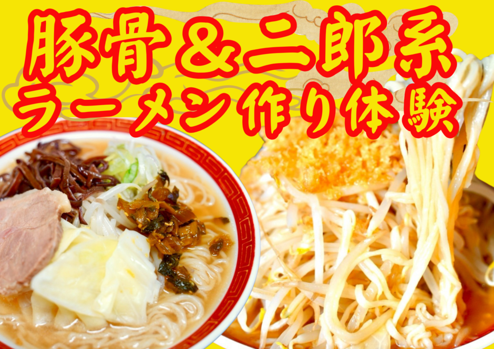
当ホームページをご覧いただきありがとうございます。このページでは河口湖で二郎系ラーメン・豚骨ラーメン作り体験を楽しめるプランをご紹介いたします。ニンニク・ヤサイマシマシ、自分だけのオリジナル二郎系ラーメン作り体験は、体験教室にいらっしゃったお客様からの声で誕生した体験です。
国内からのお客様はもちろん、海外からお越しのお客様にも日本・山梨の文化を知って頂くために英語対応も承っており、また、体験はすべて屋内で開催していますので雨天時でも楽しむことができます。ご参加いただいているお客様は、老若男女問わず様々な方ご利用用途は、家族で・友達同士で・社員旅行で・ゼミ旅行で・修学旅行でなど、様々なシチュエーションでご利用いただけます。
山梨県の郷土料理である「ほうとう」「吉田のうどん」「忍野八海そば」などの体験も行っており、さらに山梨の名物から揚げやとり天など充実の一品料理をご用意しております。ぜひこの機会にご利用下さい。
こんな方におすすめ
- ラーメン作り体験を作ってみたい方
- 本格二郎系ラーメンを作ってみたい方
- 本格豚骨ラーメンを作ってみたい方
- 山中湖や河口湖でアクティビティを探している方
- 体験企画をお探しの方
- 親子で料理作り体験がしたい方
- 大人数で料理作り体験がしたい方
- 英語対応の観光をお探しの方
豚骨ラーメン作り体験
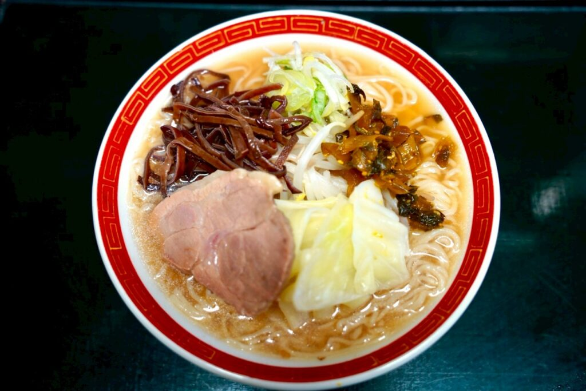
「豚骨ラーメン」とは、当店ランチでもご提供させて頂いている福岡の豚骨ラーメンです。
全国的にも珍しい豚骨ラーメンつくり体験是非お試しください。
豚骨ラーメン作り体験の特徴
当店の豚骨ラーメンの特徴は細麺・混獲豚骨スープ・豪華なトッピングです。
豚骨スープは独自のレシピでだしを取っているもので、醤油ベースのたれを合わせてスープを作っています。
トッピングはチャーシュー・ねぎ・もやし・高菜・紅ショウガです。
二郎系ラーメン作り体験
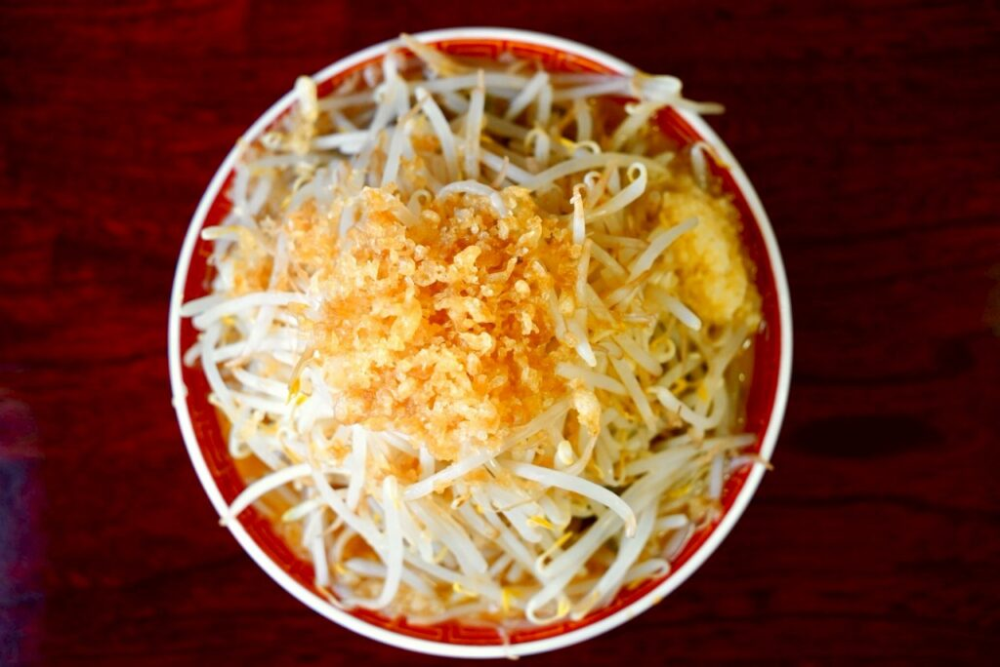
「二郎系ラーメン」とは、当店ランチでもご提供させて頂いている二郎系インスパイヤラーメンのことです。
二郎系ラーメン作り体験の特徴
二郎系ラーメンの特徴は太麺・濃い味・山盛りでインパクト抜群といったものがあり、一度食べたら病みつきになる中毒性の高いラーメンです。
当店では、ランチメニューとして二郎系メニューを提供しており、スープからこだわってご提供させて頂いております。本格的な二郎系ラーメンをぜひお楽しみ下さい。
具材紹介
二郎系ラーメンにかかせない具材をご紹介いたします。
①豚
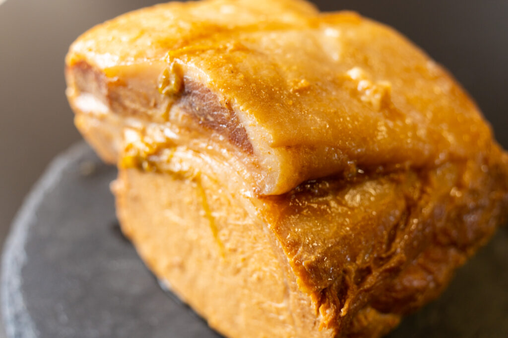
豚と呼ばれる厚めのチャーシューです。
当店では自家製のチャーシューをご用意しております。
②刻みニンニク
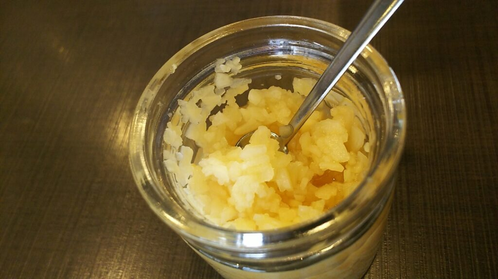
二郎系といえば「ニンニク入れますか？」というセリフが有名ですが、刻みニンニクも欠かせないトッピングです。
③ヤサイ
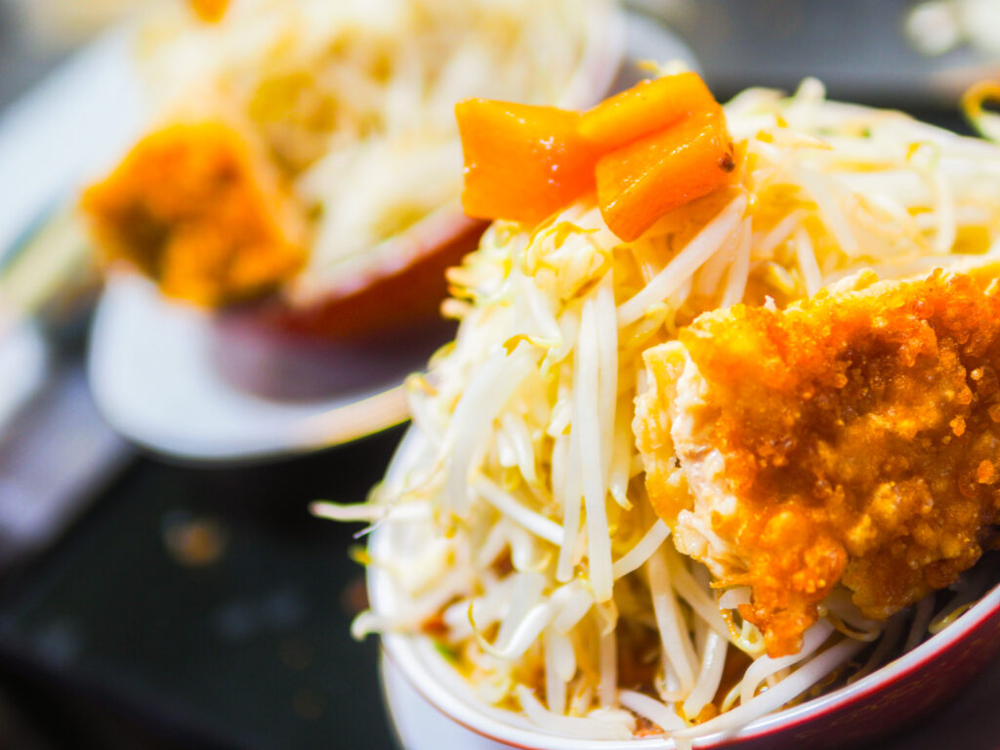
二郎系と言えばヤサイマシマシ。
もやしとキャベツをゆでたものをラーメンの上にのせます。
④極太麺
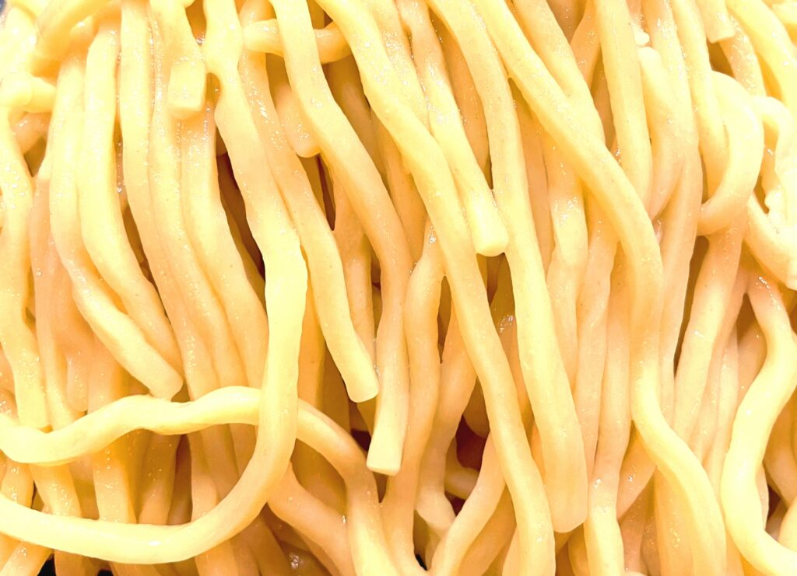
より本物に近づくように、お客様に極太のごわごわした麺を作って頂きます。
⑤背脂
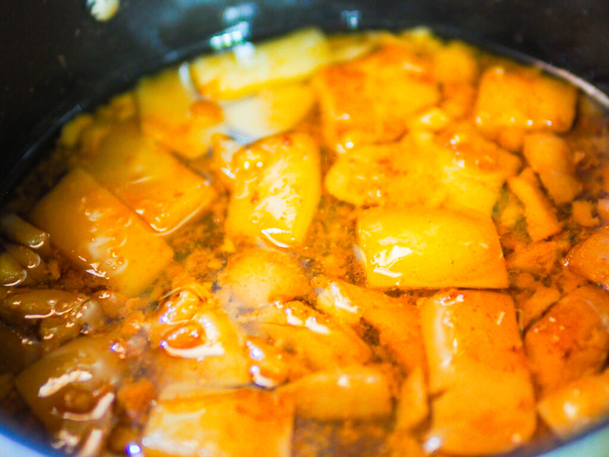
トロトロの背脂を思いっきりヤサイにかけて頂きます。
⑥天かす
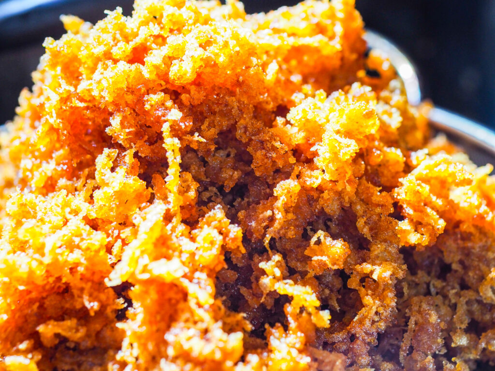
当店では二郎系には珍しい天かすをかけることもおすすめです。
料金
下記すべてのメニューは、税別表記になります。(※大人料金は13歳以上、お子様料金は5〜12歳、幼児無料)
お食事つきの体験となります。
ご予約の際にご希望の日程をお知らせください。
| 料金 | |
|---|---|
| 二郎系ラーメン作り体験/（5歳以上） | ¥3,500 |
| 豚骨ラーメン作り体験/（5歳以上） | ¥3,500 |
ご予約の流れ
- ≪予約の確認≫
- LINEまたはお電話にて空き状況をお問い合わせください。
- ≪お申込み≫
- 日にち・参加人数・体験メニュー・お支払方法・観光バスの有無などお伝えいただき、催行に問題なければご予約確定となります。
- ≪ご予約確定≫
- 富士家では二郎系ラーメン作り体験以外にも、郷土料理ほうとう、富士吉田名物吉田のうどんや忍野八海そばなどの山梨の郷土料理を作ってお召し上がり頂く体験をご用意しております。ご希望の場合はお気軽にお申し付けください。
- ≪お支払い≫
- お申し込み時にお伝えいただいた方法でお支払いをお願い致します。
①現地払い（現金 or クレジットカード）または②銀行振り込み（請求書）のいずれかでお願いいたします。（クーポン等でのお支払はできません）
体験の流れ
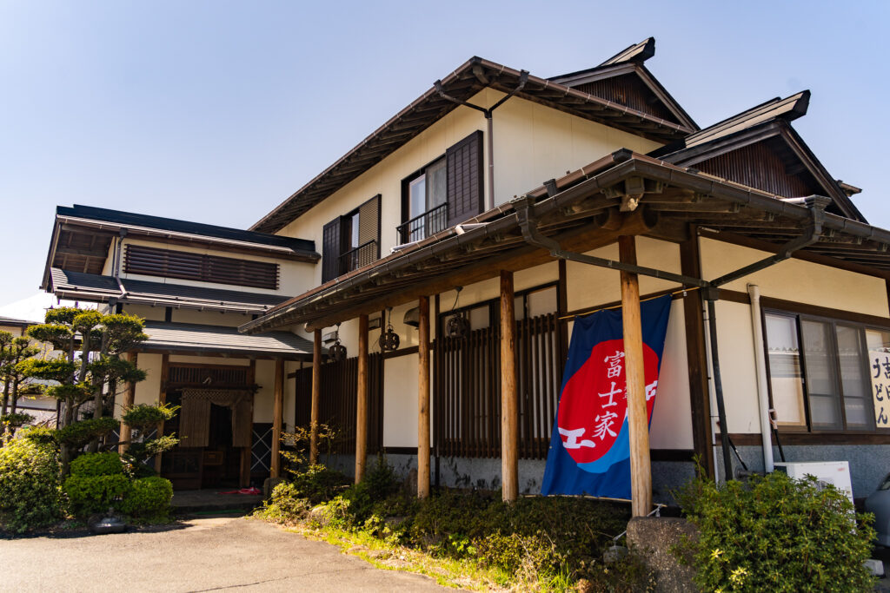
1. 会場に到着
体験開始時間の10分前にはお越し下さい。到着次第、店内にお入り下さい。当店は築数十年の歴史ある店舗となっており、ご来店いただいたお客様にゆったりとした雰囲気をご提供させて頂いております。
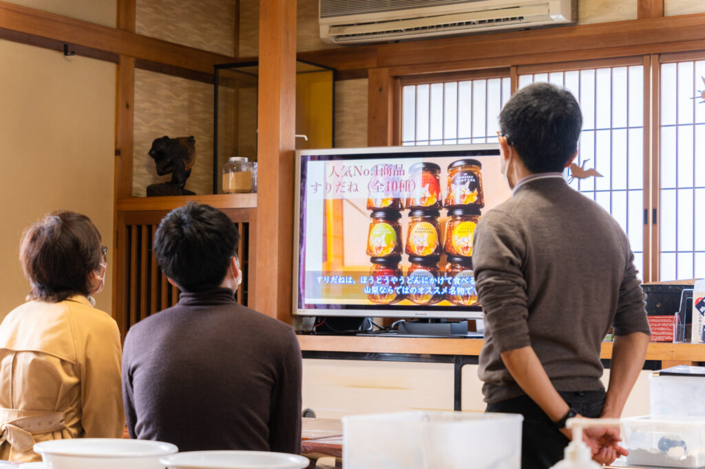
2. 体験の説明
二郎系ラーメン作り体験を始める前に当店の紹介ビデオをご視聴いただき、山梨の郷土料理についての解説や当店の自己紹介をさせていただきます。体験の前に山梨の食文化についてしっかり学びましょう。
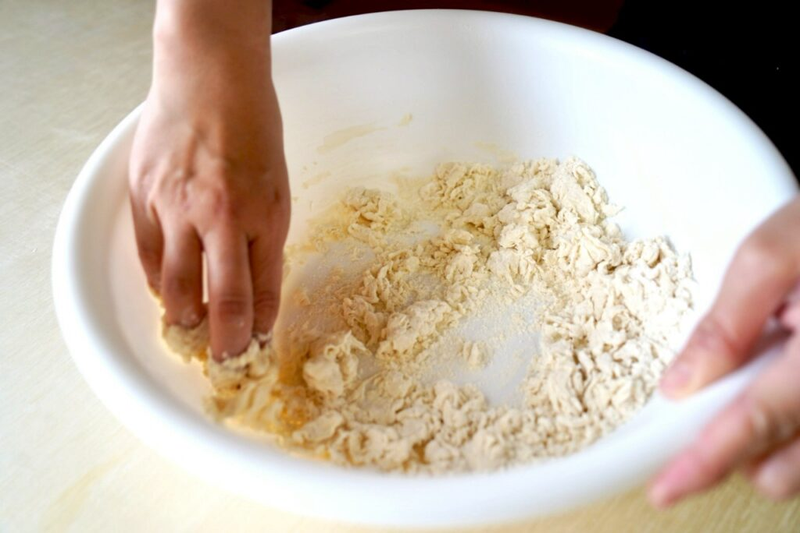
3. 混ぜ
当店では強力粉と塩で二郎系ラーメンを作ります。強力粉150gと塩ひとつまみを計った後、重曹入りの水を入れて素早くかき混ぜ、小さいダマをたくさん作ります。混ぜ続けると生地の色が濃くなってきます。水分が全体に行き渡ってきたら生地を一つにまとめていきます。全体を均一に素早く混ぜるのがポイントです。
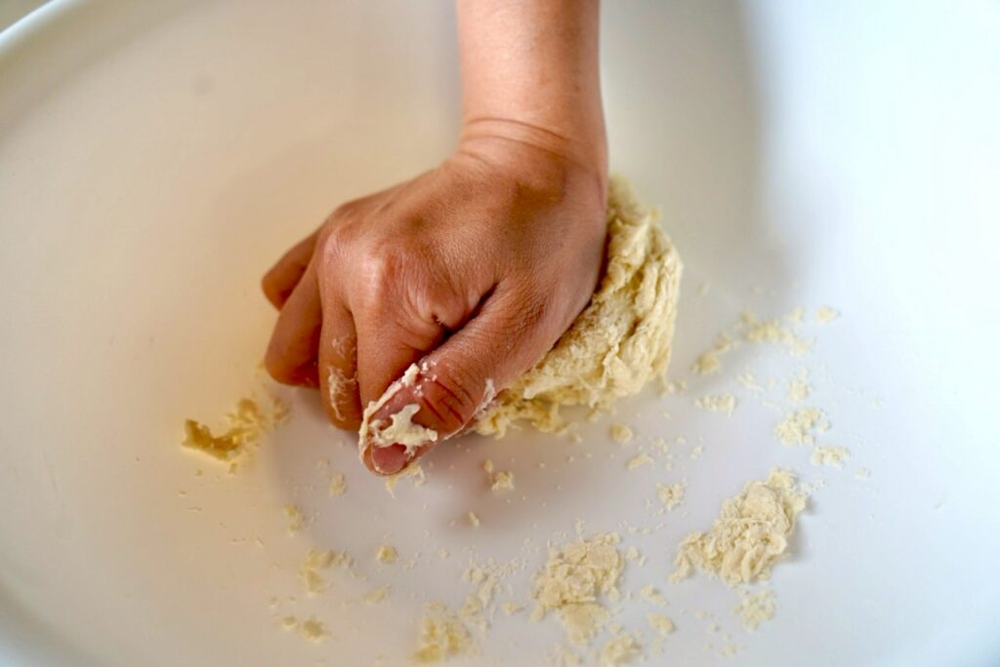
4. 捏ね
生地を捏ねる際は、手のお腹を使って体重を掛けながら一つにまとめます。生地の表面に白い粉が残っている状態ですと、捏ねが不十分です。生地の表面全体がクリーミーになるまで力強く捏ねていきます。特にお子様ですと力が足りないこともあるので大人の方と協力しながら進めましょう。
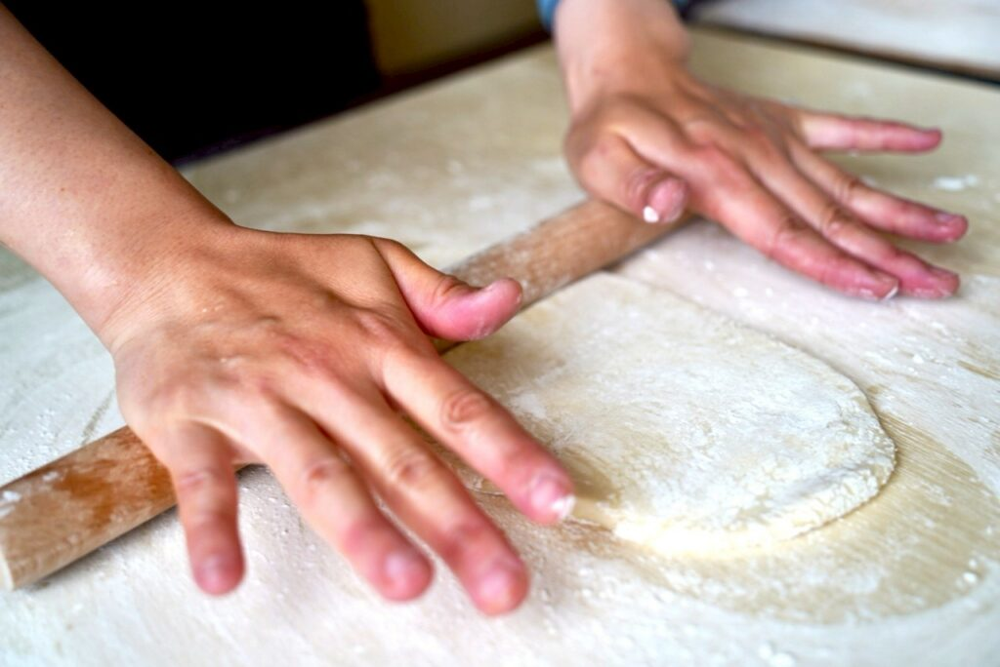
5. 延ばし
生地が完成したら生地の表面に打ち粉をふりかけます。表面が白くなったら麺棒を使って生地を薄く伸ばしていきます。
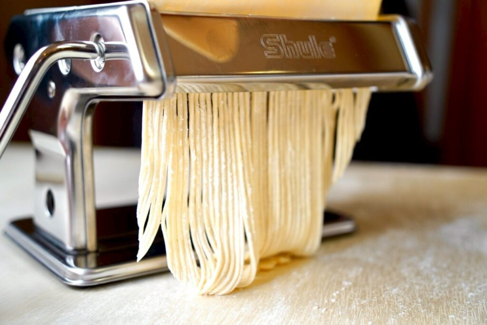
6. 切り
生地を延ばし終えたら、生地に打ち粉を両面に振りかけます。その後、麺きり機に生地を入れて切っていきます。完成まであと少しです。
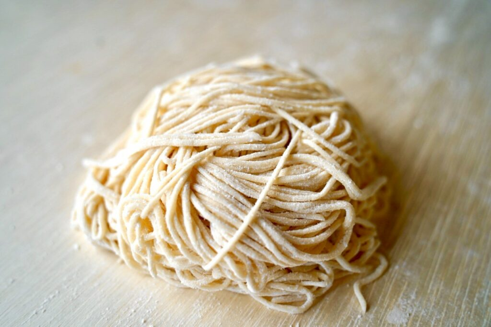
7. 記念撮影
二郎系ラーメンの麺が完成したら、記念に写真をお撮りします。記念撮影用の文字入り板もございますのでご希望の方はご利用下さい。写真を撮り終えましたら、お食事のテーブルにご案内します。
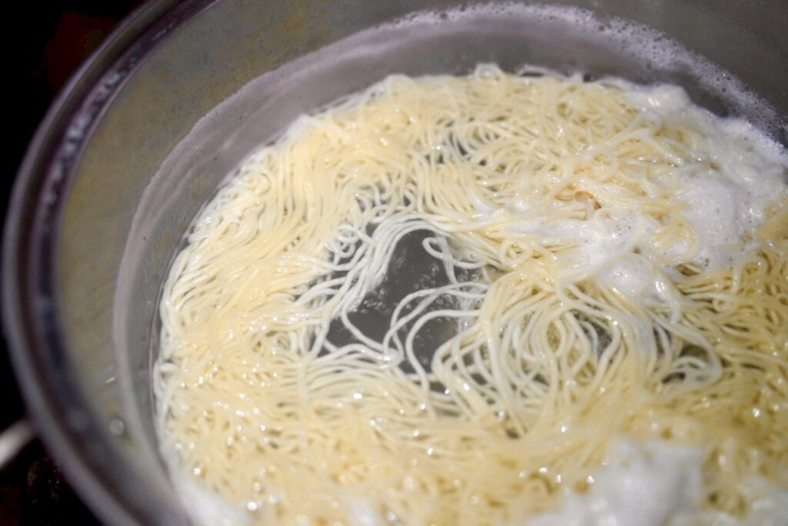
8. 茹で
二郎系ラーメンを茹でる際はキッチンで茹でさせて頂きます。時間は10分ほど。複数人でご参加の場合は、最大3名～4名様でまとめて茹でさせて頂きます。茹で終えたら、麺とトッピング類をお客様の席に運びます。ご自由にトッピングしてください。
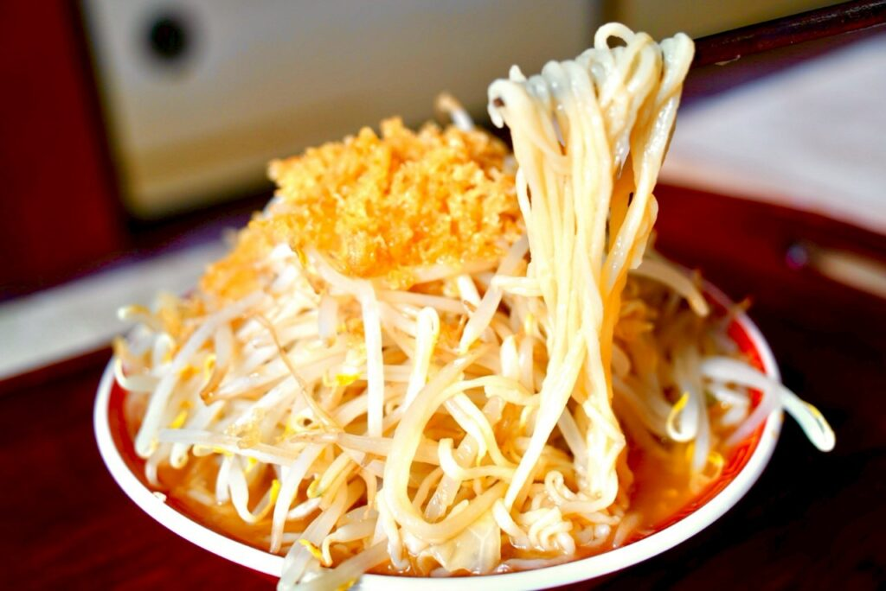
9. 実食
オリジナル二郎系ラーメンの完成です。今回作り方を学んだ経験を生かして是非ご自宅でも作ってみてください。トッピングで肉厚チャーシューや名物のとり天がございます。辛いのが好きな方・苦手な方にも非常におすすめなのがすりだねと呼ばれる山梨の名物辛味調味料です。お土産・差し入れにもピッタリなので是非お試しください。

10. 当店おすすめのすりだね
すりだねとは、富士吉田市にある吉田のうどん屋に必ず置いてある名物の辛味調味料のことです。二郎系ラーメンにも非常に相性が良いので、是非お試しください。富士家のすりだねはオリジナルで60種類以上ご用意しております。辛さが苦手な方でも食べられるように辛さ控えめのものもございますのでお気軽にどうぞ。
二郎系ラーメン作り体験についてのよくあるご質問
お客様からよくいただく質問ですのでぜひ一度お読みください。
ご不明な点がある方はお問い合わせよりお願いいたします。
- 所要時間はどのくらいですか？
- お食事込みの場合約90分となります。お客様の人数やセットメニューによって前後いたします。
- 英語での対応は可能ですか？
- はい。スタッフは英語での対応もできますので外国からのお客さまもお気軽にご利用ください。
- 予約は何日前までにする必要がありますか？
- ご予約は通常前日までとなりますが状況によって当日も受け付けております。ほかのお客様との兼ね合いもございますのでお早めにお願いいたします。
- クレジットカードは使えますか？
- はい。クレジットカードもご利用いただけます。お振込みにも対応しております。
- 河口湖からはどのくらい時間がかかりますか？
- お車でおよそ5分です。
- 駐車場はありますか？
- はい。無料駐車場がございますのでご利用下さい。
- 富士吉田河口湖店には観光バスも駐車できますか
- 観光バスも車場をご利用頂けます。
- 夜中や早朝でも予約できますか？
- はい。こちらのお問い合わせLINEから24時間受け付けております。時間は気にせずご連絡ください。
- 後片付けもする必要がありますか？
- 後片付けはスタッフが行います。
- 小さな子供が一緒でも大丈夫ですか？
- はい。お子様と一緒に体験されるお客さまも多くいらっしゃいます。
- スマホやビデオで撮影しても構いませんか？
- はい。ぜひ思い出を映像や画像に残してください。SNSやブログなどへのUPも歓迎しております。
体験会場について
体験教室 富士家 本店
| 住所 | 〒401-0301 山梨県南都留郡富士河口湖町船津３３７６−３ |
| 受け入れ可能人数 | 1名～20名 ※20名様以上のご予約をご希望の場合は「ほうとう作り体験」でお申し込みください。 |
| 駐車場 | 無料駐車場有（大型バス2台駐車可能） |
| 予約可能時間 | AM 9:00~20:00 |
| 最寄駅 | 富士急行線河口湖駅（徒歩12分） |
その他体験コースに参加されたお客様の様子
ほうとう体験に参加されたお客様のご紹介
修学旅行のお客様

大学生のお客様


友人同士のお客様


お子様連れのお客様
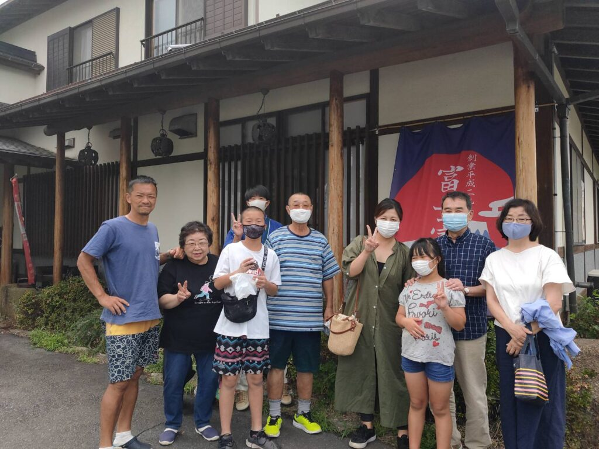
家族旅行のお客様
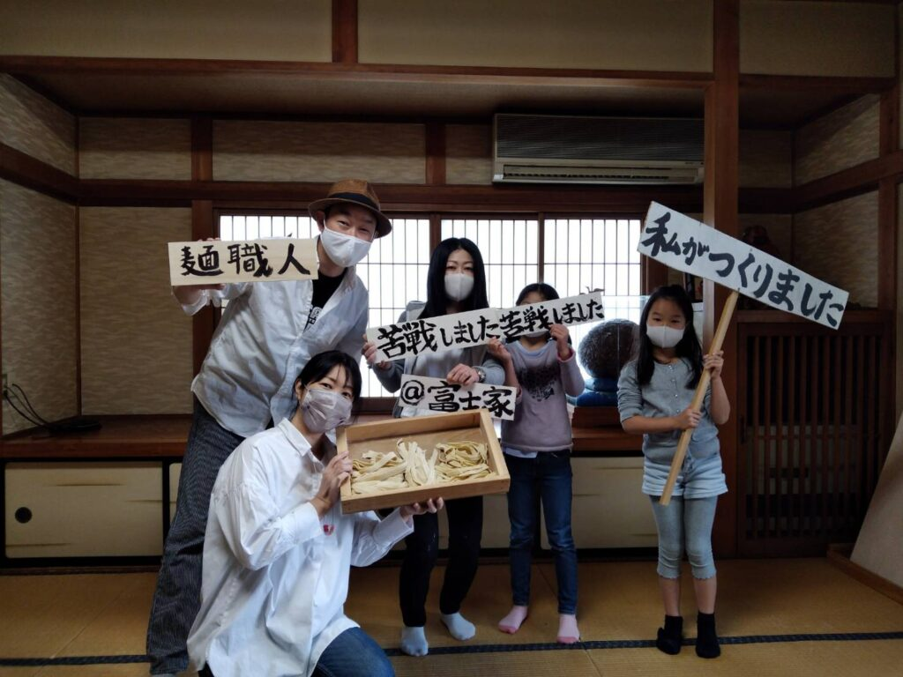

{kind=link}
ほうとう体験のお客様の声・感想
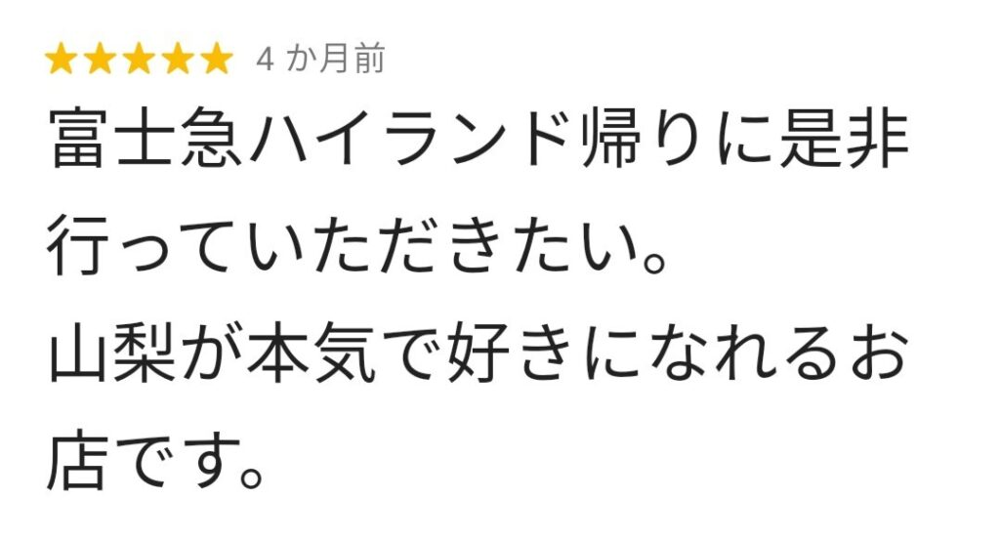


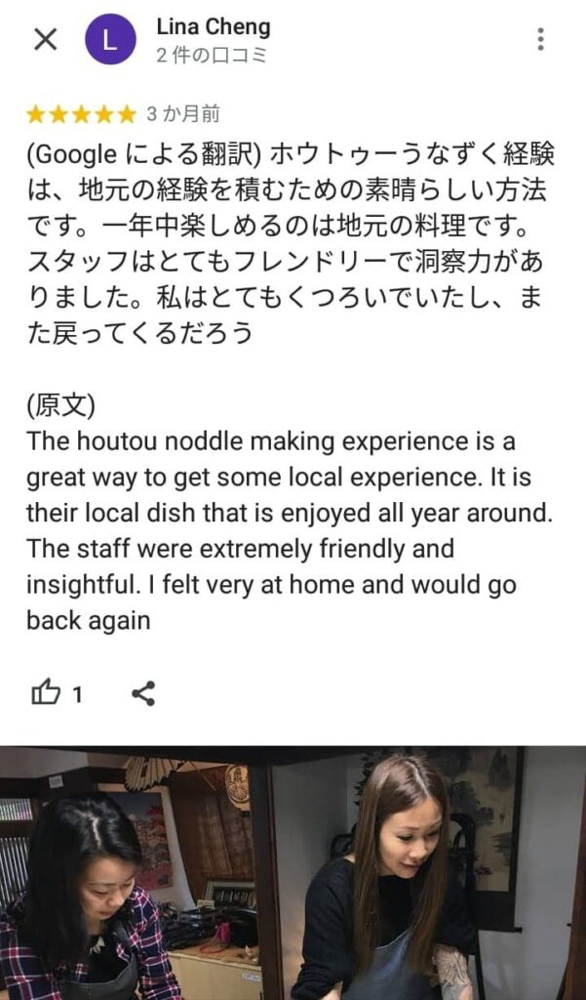


お申込み 24時間受け付けております